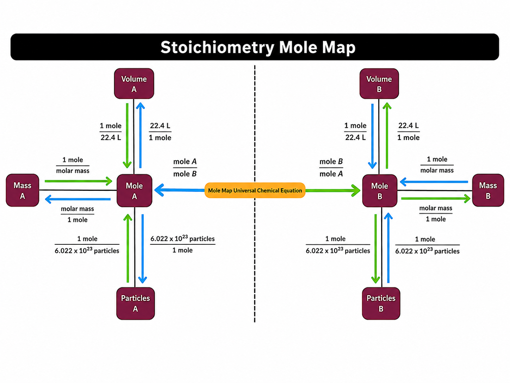

1) Choose your starting point and your target
This tool reveals stoichiometry in three moves: convert → ratio → convert.
New: You can also use this to plan within-substance conversions (no mole ratio needed).
2) Mole Map (reference)
Tip: If you get stuck, focus on one goal at a time: “Do I have moles yet?”

Text version of the Mole Map
Begin with the unit you have. Convert to moles when necessary. Use a mole ratio only when moving from one substance to another. Then convert from moles to the requested unit.
- Grams to moles: divide by the substance’s molar mass in grams per mole.
- Moles to grams: multiply by the substance’s molar mass in grams per mole.
- Particles to moles: divide by 6.022 × 1023 particles per mole.
- Moles to particles: multiply by 6.022 × 1023 particles per mole.
- Liters of gas at STP to moles: divide by 22.4 liters per mole.
- Moles to liters of gas at STP: multiply by 22.4 liters per mole.
- Substance A to Substance B: use the balanced-equation coefficients as the mole-to-mole conversion ratio.
What students should remember
- Convert to moles if you aren’t already in moles.
- Mole ratio always comes from the balanced equation coefficients (only needed when switching substances).
- Convert out to the unit asked for (grams, particles, liters).